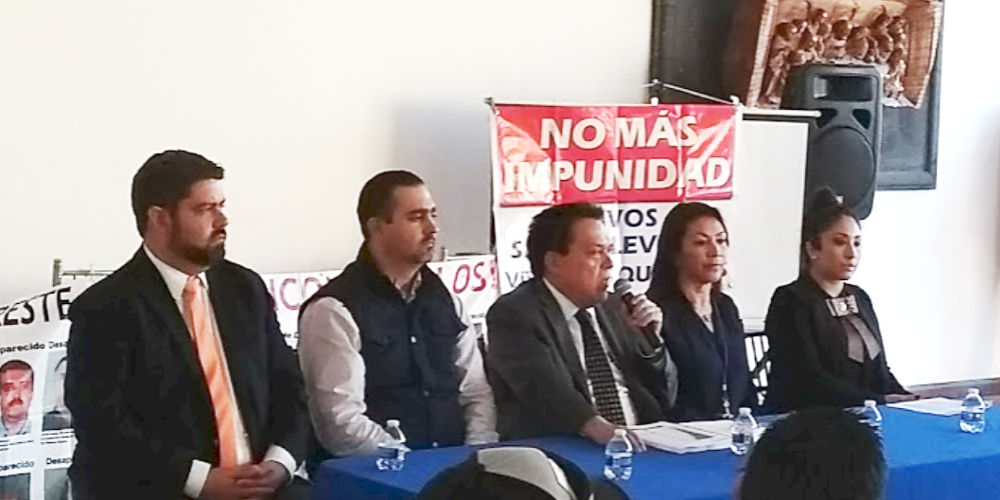

Representantes de la Secretaría Ejecutiva del asisten al Foro de consulta ciudadana del Plan de Gestión Institucional 2018-2024 de la Fiscalía General del Estado
22 marzo 2018
22 de Marzo de 2018
Saltillo, Coahuila.
El Foro de consulta ciudadana para la construcción del Plan de Gestión Institucional 2018-2024 convocado por la Fiscalía General del Estado contó con la asistencia y participación de representantes de la Secretaría Ejecutiva del SEA, al igual que ciudadanos pertenecientes a organizaciones de la sociedad civil, colegios y asociaciones de abogados, estudiantes y académicos, además de funcionarios pertenecientes en su mayoría a órganos de impartidores de justicia. Fungiendo como sede las instalaciones de la Universidad La Salle, en la ciudad de Saltillo. Las actividades dieron inicio a las 17:30 y finalizaron a las 19:30.
El trabajo fue resultado de la actividad de cuatro mesas temáticas: control interno y combate a la corrupción, fortalecimiento de capital humano, rediseño institucional y persecución de delitos. Presentándose 65 propuestas tales como la incorporación, colaboración y acompañamiento de organizaciones ciudadanas e instancias externas a los procesos de investigación, la implementación de un código de ética, implementar medición del desempeño del funcionario por medio de indicadores, contar con diagnósticos al interior de las dependencias, mayor capacitación y mejores prestaciones para mejorar los perfiles, implementar el servicio profesional, hacer uso de los instrumentos de gobierno abierto.
En la clausurá del evento, el Fiscal General Gerardo Márquez agradeció a los participantes sin dejar de mencionar al Sistema Nacional y el Sistema Estatal Anticorrupción como una consecuencia del actuar ciudadano.
